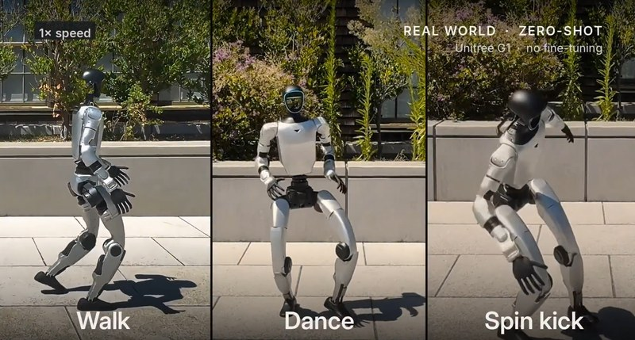
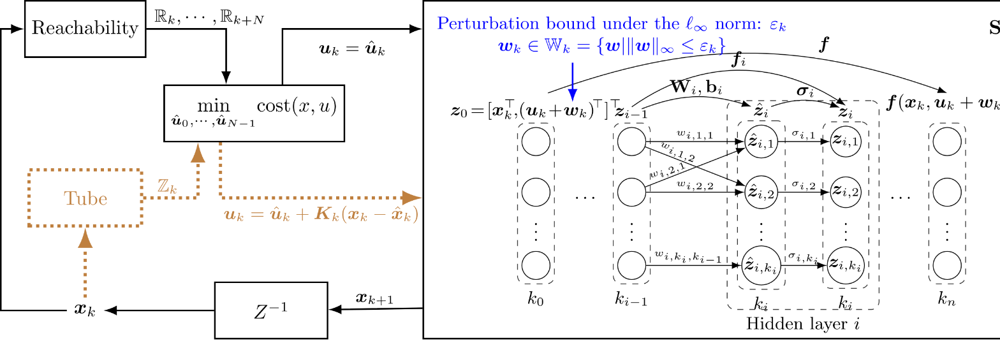

I'm a second-year PhD student in Mechanical Engineering at UC Berkeley, advised by Prof. Koushil Sreenath in the Hybrid Robotics Lab.
I work on humanoid robots as well as interpretability of foundation models. I study what robotic models and policies learn inside, from the weights of humanoid policies to how world action models route information, and use that understanding to make them safer and more efficient.
Before Berkeley, I received my B.Eng. in Automation from Tsinghua University, advised by Prof. Yilin Mo, and was a visiting researcher at the CMU Robotics Institute with Prof. Changliu Liu.

We generate humanoid control policies directly in weight space. Sampled networks walk, dance, and spin kick zero-shot on a real Unitree G1. Looking inside the weights, every policy focuses on the kinematic prior: embodiment comes first, motion second.

A reachability-based robust MPC that uses neural network verification to bound multi-step reachable sets of learned dynamics, without linearization. Compared to tube MPC, it cuts control cost by up to 69% and tracking error by up to 63%.